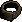

Let's Get Crafty!
So, you're interested in the Crafting skill?
See what's in store for you below...
Pottery
Pottery is the craft of turning soft clay into pottery objects. Soft clay can be obtained by mining clay and using it with a water source. Most clay items are made at a potter's wheel - some exclusions may exist!
With pottery, you can make items such as:
Empty Pot

Used to hold flour, amongst other things.
Level 1
Clay Ring
Doesn't require a potter's wheel to make.
Level 4
Pie Dish
Used for baking Pies.
Level 7
Bowl
Used in Cooking.
Level 8
Plant Pot
Used in Farming.
Level 19
Pot Lid
For keeping Pots airtight.
Level 25